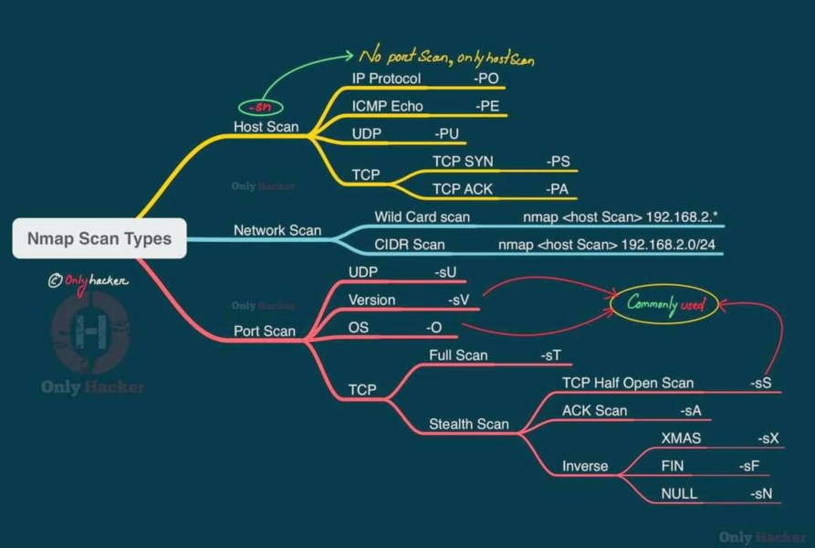
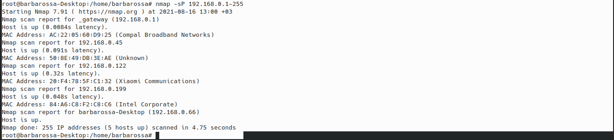
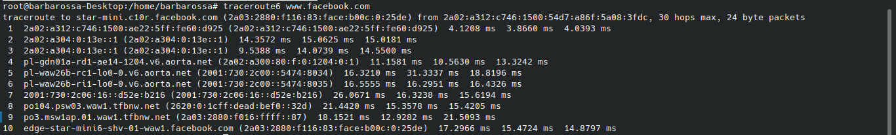
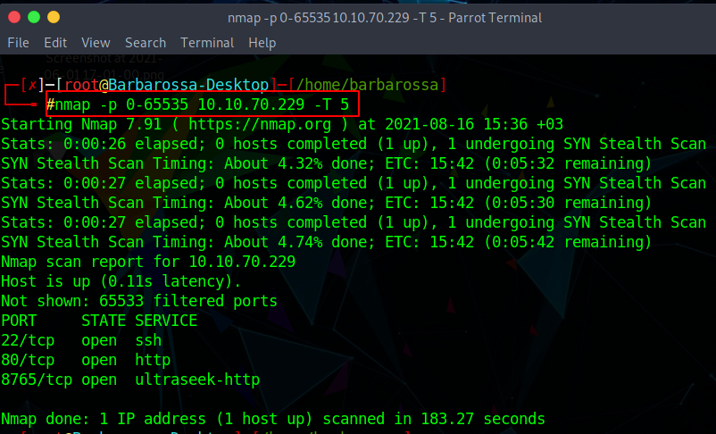
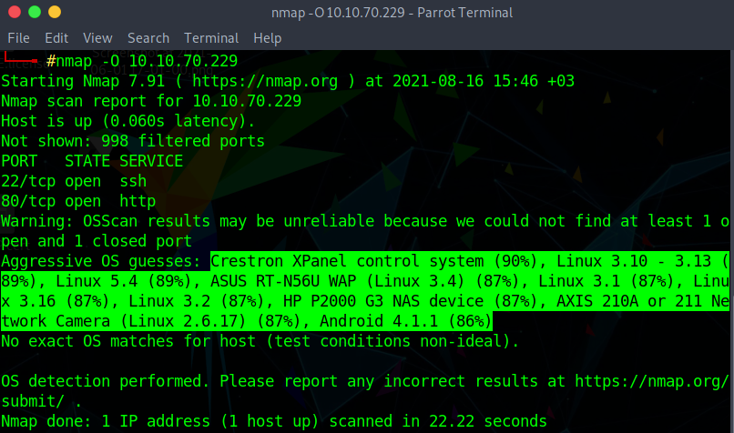
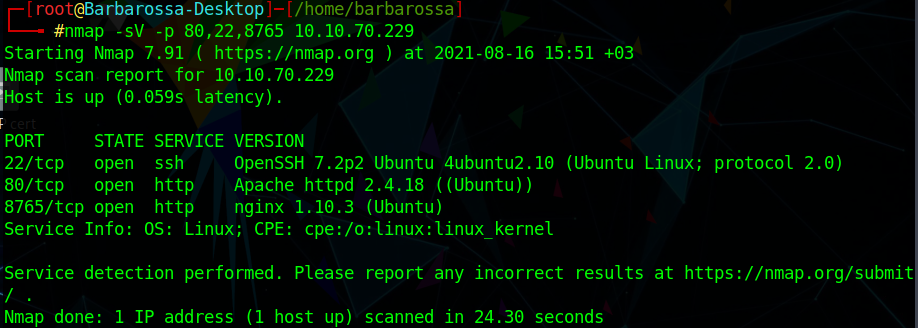

Scanning
سنتكلم اليوم عن واحدة من اهم مراحل الاختراق وهي الscanning ، طبعا الحديث سيكون من وجهة نظر أمنية بحتة
• عملية ال scanning : هي عملية تهدف إلى ايجاد نقاط ضعف موجودة في نظام معيّن بواسطة التفاعل مع ذلك النظام
• أهداف ال Scanning :
1) تحديد عناوين الشبكة (network addresses) للأنظمة النشطة
2) تحديد بنية الشبكة (network topology) الخاصة بالهدف : معرفة وجود جدران الحماية ، السيرفرات والclients ، الRouters والSwitches والأجهزة الأُخرى ..
3) تحديد أنواع أنظمة التشغيل للأنظمة التي تم إيجادها : لإيجاد الثغرات المرتبطة والمعروفة بنظام التشغيل .
4) تحديد ال (Ports) المفتوحة وخدمات الشبكة (Network services) عند الهدف : في هذه المرحلة يتم معرفة البورتات المفتوحة في الجهاز ولكن يجب معرفة انه هناك نوعين رئيسيين من البورتات : TCP و UDP . تذكّر انه كلما كان هناك بورتات أكثر كلما كان معرّضا للاختراق بنسبة أكبر لأن البورتات تمكنّك من الوصول الى جهاز الضحية .
5) إنشاء قائمة بالثغرات المحتمل وجودها : معرفة الثغرات ناتج عن معرفتنا ب نسخة الnetwork services مثلا إذا وجدت الضحية يملك web server والنسخة الخاصة به قديمة يمكنك البحث عن نسخة الweb server الخاص به في
https://www.exploit-db.com/ ، سنتحدث عن موضوع استغلال الثغرات لاحقا في موضوع مفصّل
• أقسام عملية الScanning :
1) قسم الnetwork sweeps : وهي معرفة هل الجهاز نشط أم خامل (غير نشط)
2) قسم الnetwork tracing : وهو معرفة الطريق بيني وبين الشيء المتصل به مثلا عدد الروترات التي أمر بها والIP الخاص بها وما الى ذلك ; لكي اعرف اين توجد المشكلة اذا انقطع الانترنت او الاتصال بيني وبين الهدف .
3) قسم ال Port Scans : معرفة عدد البورتات المفتوحة في الجهاز
4) قسم ال OS Fingerprinting : معرفة نظام التشغيل الخاص بالهدف
5) قسم ال version scans : معرفة نوعية الخدمات وأرقام إصدارها
• أدوات ال Scanning
- واحدة من أهم أدوات الscanning هي الnmap بلا شك ; لأنها قادرة على فعل أهداف وأقسام الscanning الخمس التي تم ذكرهم سابقا

الآن سنبدأ بتطبيق الأقسام الخمس التي تم ذكرهم سابقا بواسطة ال nmap لكن قبل ذلك يجب معرفة ان الnmap عبارة عن سكريبتات جاهزة مكتوبة بلغة البرمجة Lua
1) معرفة هل الجهاز نشط أم لا : سنستخدم الامر nmap -sP IP-TARGET

كما هو واضح الأجهزة التالية نشطة 192.168.0.1 , 192.168.0.45 , 192.168.0.122 , 192.168.0.199 , 192.168.0.66
2) معرفة الطريق بيني وبين الهدف وكم عدد الhops نستخدم اداة traceroute6 :

3) معرفة عدد البورتات المفتوحة عند الهدف نستخدم الأمر : nmap -p 0-65535 IP-TARGET
خيار ال -p لاختيار البورتات المراد فحصها ولأننا سنفحص نطاق معيّن من البورتات ، ليس واحد او اثنين سنستخدم - مع اصغر قيمة الى اكبر قيمة ف مثلا اذا اردنا فحص البورتات من 1 الى 100 سنستخدم الامر 1-100 مع الp- . وبما أننا اردنا فحص كل البورتات وكل البورتات الموجودة 65535 سنبدأ من البورت 0 الى البورت 65535 كما هو موضّح في الصورة :

والنتائج كما هي واضحة هناك بورت 22 ومُستخدم من قبل الssh ، وبورت 80 مُستخدم من قبل الhttp بمعنى انه هناك ويب سيرفر . وبورت 8765 أيضا مستخدم من ويب سيرفر
4) الآن حان وقت معرفة نظام تشغيل الخاص بالهدف ، سنستخدم الnmap مع أمر O- كما هو موضّح في المثال :

طبعا نتائج البحث أتت متطابقة وهي ان نظام التشغيل لينكس ، ولكن لتشابه الرد المُستقبل من الضحية أعطانا الnmap عدّة أنظمة تشغيل مع احتمالية صحّتها ف نسبة ان يكون crestron XPanel control system 90% و لينكس 1.10-3.13 89% وهكذا
5) معرفة ال version services : سنستخدم الnmap بالأمر التالي : nmap -sV -p 80,22,8765 IP-TARGET
الفكرة الجديدة هنا استخدامنا للsV- وتعني scan version مع البورتات التي تم اكتشافهم مسبقا . ونتائج العملية كالآتي :

المحصّلة كانت معرفة إصدار برامج الservices الموجودة على نظام المُستهدف ف مثلا الويب سيرفر الخاص به يستخدم nginx 1.10.3 و Apache 2.4.18
الScanning واحدة من أهم المراحل في تنفيذ الاختراق ف كلمّا كان لديك معلومات عن الضحية اكثر كلما كان اختراقها لاحقا أسهل . أما بالنسبة للأدوات هناك العديد منها مثل masscan , rustscan وأهمها الnmap . هناك حاﻻت يمنع فيها الfirewall هذه الأدوات من معرفة بعض المعلومات ولكن يمكن أيضا تجاوز حمايته .